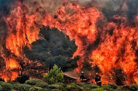

Much of the damage occurred in and around the Thompson-Okanagan, with dozens of homes destroyed by the White Rock Lake fire, near Westside Road and in the Monte Lake area. With 496,983 hectares burned, it was the worst season on record for the Kamloops Fire Centre, which includes the entire Thompson-Okanagan region.
“It’s been a week of steady progress and over the past seven days the average number of fires per day has remained at around below seven,” Schweitzer said. “The total number of fires burning at one time has remained below 250.”
A statement posted on the airport’s website said a wildfire northwest of Vernon has moved toward Okanagan Lake and a no-fly zone is posted above the fire, impeding planes trying to land in Kelowna.